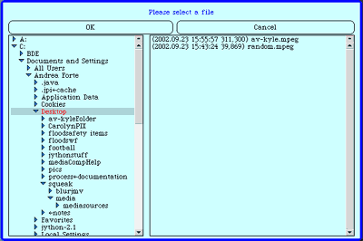
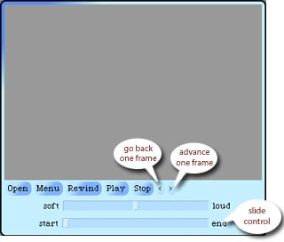

VideoTools allows you to view digital video.
Opening a Video
To open a video in VideoTools:
- click on the "Open" button on the left side of the toolbar.
- A dialog box will appear, in which you can browse the files on your computer (see image below). To open a folder, click on the blue triangle; to select a folder, click on the folder's name. All folders appear on the left, while the available images in the selected folder appear on the right. Remember, VideoTools only recognizes the video file types .jmv and .mpeg.
- Select a .jmv or .mpeg file and click on "OK"

Controls for video playback include:
- Rewind
- Play
- Stop
- Go back one frame
- Advance one frame
- Play softer
- Play louder
In addition, by using the slide control, you can play and rewind the
video manually. (see image below)

The frame rate is the number of frames that play in one second. So a higher frame rate results in a faster, shorter video; a lower frame rate results in a slower, longer video. To view videos at varying frame rates in VideoTools:
- Click on the "Menu" button.
- Select "set frame rate."
- A dialog box will appear, enter a frame rate and click "accept."
- Play the video to see the result.
You may wish to save the frames of a video as individual images in order to edit individual frames or use them elsewhere. To do this:
- Open the MPEG that you would like to save as a folder of frames.
- Click on the "Menu" button.
- Select "Create Folder of Frames from MPEG"
- Wait several seconds while the computer saves your frames. Depending
on the length of the video and the speed of your processor, this could
take anywhere from a few seconds to several minutes. The new folder
will be located in the same folder as your MediaTools program.
VideoTools allows you to convert a folder full of images into a video. To do this:
- Click on the "Menu" button.
- Select "create JPEG movie from a folder of frames"
- A dialog box will appear. In this dialog, the folders above the current
folder are listed at the top, any folders in the current folder are
in the middle, and the available files are at the bottom (see image
below).

- Find and elect the .jpg file that corresponds to the first frame of
your video. Make sure that the images are numbered in the order they
should appear in the video.
For example:
001.jpg
002.jpg
003.jpg
etc...
- When you have selected the appropriate file, another dialog box will appear in which you will enter the name of your new movie and click "accept." (The computer will automatically add the correct extension for you.)
- Yet another dialog box will prompt you to enter the desired quality
level (choose 100) and click "accept."
- A final dialog box will appear in which you can enter the frame rate.
- When you have entered the frame rate, VideoTools will begin putting your movie together. You'll know it is working because it will sequentially display each frame in the movie as it is processed. When the movie is finished, you can open it and view it.